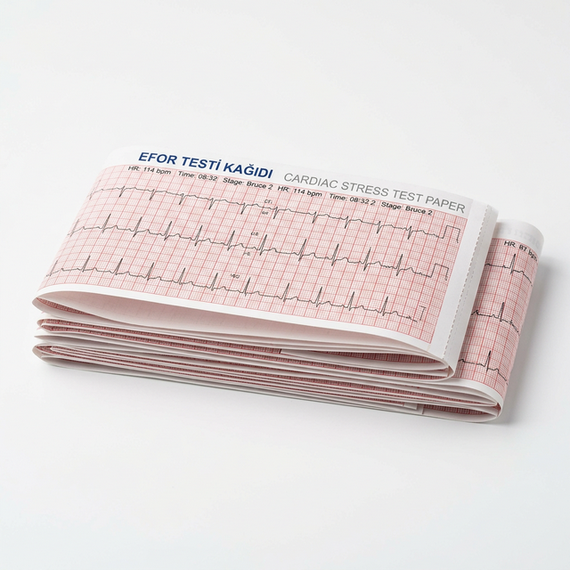

Efor Testi Kağıdı Seçerken Nelere Dikkat Edilmelidir?
Yayınlanma: 15 Mart 2026 | Okuma Süresi: 3 Dk.

Kalp hastalıklarının teşhisinde kritik bir rol oynayan Efor Testi (Stres Testi), kalbin fiziksel aktivite sırasındaki ritmini ve performansını kaydeder. Cihazın ürettiği bu hayati verilerin hatasız bir şekilde okunabilmesi ve doktorlar tarafından doğru yorumlanabilmesi için kullanılan efor kağıdının (termal kağıt) kalitesi büyük önem taşımaktadır.
Kaliteli Efor Kağıdının Özellikleri Nelerdir?
Satın alacağınız efor kağıdının cihazla tam uyumlu olması ve teşhis kalitesini düşürmemesi için bazı teknik özelliklere sahip olması gerekir:
- Yüksek Çözünürlüklü Baskı: Termal yüzeyin hassasiyeti, kalp grafiğindeki en ufak değişimlerin bile net çıkmasını sağlamalıdır.
- Cihaz Uyumluluğu: Piyasada bulunan GE, Schiller, Mortara gibi yaygın cihazlarla sensör delik hizalarının ve milimetrik kılavuz çizgilerinin milimetrik uyumlu olması şarttır.
- Arşivlenebilirlik (Solmazlık): Tıbbi kayıtların yıllarca saklanması kanuni bir zorunluluktur. Bu sebeple 5-7 yıl solmazlık garantisi sunan kaliteli termal kimyasallar tercih edilmelidir.
- Sıkışma Yapmayan Z-Fold Yapısı: Yoğun tempolu polikliniklerde kağıdın yazıcı içinde sıkışması zaman kaybına yol açar. Düzgün katlanmış Z-katlama (Z-fold) dizaynı pürüzsüz çalışma sağlar.
Kalitesiz Termal Kağıt Kullanımının Riskleri
Ucuza mâl etmek amacıyla standart dışı kağıtlar kullanmak, cihazın termal yazıcı kafasına (thermal printhead) zarar verebilir. Yazıcı kafasının çizilmesi veya erken aşınması, kağıttan edeceğiniz tasarrufun çok ötesinde cihaz tamir masrafları çıkaracaktır. Ayrıca, kısa sürede silinen grafik çizgileri teşhisin tekrarını zorunlu hale getirebilir.
Doğru medikal kağıt yatırımı, hem cihazınızın ömrünü uzatır hem de hasta güvenliğini sağlar. DNS Medikal olarak uluslararası standartlarda ürettiğimiz/tedarik ettiğimiz efor kağıtlarıyla sağlık kuruluşlarına kesintisiz hizmet güvencesi sunuyoruz.
Efor Kağıtlarımızı İncelediniz mi?
Tüm modern efor cihazlarıyla uyumlu, yüksek kaliteli ve leke tutmaz termal ürün yelpazemize göz atın.
Ürün Detaylarını Gör